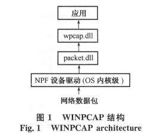
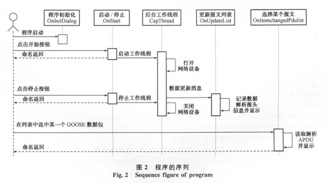
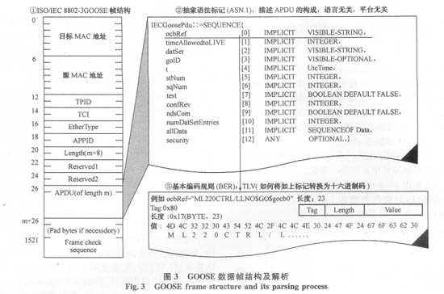

基于WINPCAP的GOOSE报文捕获分析工具开发
来源：赛尔电力自动化 总第76期
0 引言
当前，国内厂商对IEC 61850的开发工作已经从以制造报文规范（MMS）为核心的客户/服务器（C/S）服务实现转到面向通用对象的变电站事件（GOOSE）和IEC 61850-9-1/2的实现上来。GOOSE通信及其应用是IEC 61850的一个亮点，其出发点是功能的分布式实现口]，GOOSE应用的建立需要多方面配合，同时也是一个较为烦琐的工程。在工程的调试过程中，对 GOOSE报文的分析是一个必不可少的步骤，即检查数据发送是否正确及其时间特性。因此，如果有一个简捷的工具来捕捉与分析IEC 61850报文，将会有助于工程调试的顺利进行。
WINPCAP（Windows packet capture）网络开发包是一个免费、基于Windows平台、访问网络链路层的工业标准工具，它允许各种应用程序绕过协议栈捕捉并传送网络数据包，同时还包括一些其他功能，如包过滤、网络流量统计以及远程捕获等。基于这一开发包，可以方便地开发出GOOSE报文的捕捉工具，进而根据ASN.1/BER 对报文进行解码并分析。
本文介绍了如何基于WINPCAP开发包开发一个完整的GOOSE报文捕获工具，以及整个设计思路和实现过程，并提出了一些可能的应用。希望能够为IEC 61850标准在中国的推广做出一些贡献。
1 WINPCAP简介
1.1 内部结构
WINPCAP是一个Win32平台下用于抓包和分析的系统，其基本构成如图1所示。它包含一个运行于操作系统内核级的模块，与网络设备驱动接口直接连接，这一模块直接绕过了系统的协议栈。为了让用户程序使用内核提供的功能，WINPCAP提供了多个编程接口分别封装在2个不同的动态链接库 packet.d11和wpcap.d11中。packet.dll提供一个底层的应用程序接口（API），通过这个API可直接访问网络设备驱动，而独立于Microsoft操作系统；wpcap.dll是一个高层的强大捕获程序库，与Unix下的libpcap兼容，它独立于下层的网络硬件和操作系统。

http://www1.shejis.com/uploadfile/dq/uploadfile/200903/20090304040423296.jpg
1.2 捕获数据包的接口与方法
WINPCAP有捕获数据包、发送数据包、统计网络流量3个主要功能。捕获数据包的基本流程如下：
⑴通过接口函数pcap_findalldevs_ex枚举所有可用的网络设备。
⑵根据枚举返回的网络设备名称打开一个设备，对应接口函数为pcap_open( )。
⑶如果需要，设置数据包的过滤条件，对应接口函数为pcap_setfilter。
⑷捕获原始的数据包，有2种方法：一种方法是以回调函数的方式由接口pcap_loop或pcap_dispatch完成，其基本方法是底层收集数据包，当满足一定的条件（timeout或者缓冲区满），就调用回调函数，把收集到的原始数据包通过数据缓存区交给用户；另一种方法是 pcap_next_ex( )的方法，每当一个包到达以后，接口pcap_next_ex就会返回，返回的数据缓冲区中只包含一个包。
本文采用。pcap_next_ex的方法，并且设置了包过滤的条件，只捕获类型为GOOSE的数据包，即EtherType为0x88的数据包。
2 程序设计与开发
2.1 初始化
初始化工作包括2个部分：一是人机界面中协议数据单元（PDU）列表控件实例与GOOSE数据集列表控件实例的初始化，包括列名称、列宽度等相关属性；二是网络设备的枚举及显示，枚举可用设备的接口函数为pcap_findalldevs( )，调用方法如下：
If (pcap_findalldevs(&m_pAlldevs, errbuf)==-1) return FALSE;
如果成功地枚举到可用的网络设备，网络设备的相关信息将返回到列表m_pAlldevs中，网络设备的信息包括设备的唯一识别名称及其可读的描述内容，然后将其显示在一个下拉列表中供用户选择。
2.2 捕获线程的建立和用户的交互
网络数据的捕获需要为其单独建立一个后台工作线程。当选定网络设备后，点击启动按钮，就启动后台工作线程。后台工作线程与界面线程的交互通过消息机制来完成。在后台工作线程中，首先通过接口函数pcap_open_live打开网络接口设备，然后调用接口函数pcap_next_ex启动网络数据的捕捉。每当捕捉到一个数据包时，接口函数pcap_next_ex就会返回，然后启动一个GOOSE报文过滤机制，如果报文类型EtherType为 0x88B8，则通过消息将数据回传给界面线程。界面线程然后解码，并将每一个捕获到的GOOSE报文显示到一个列表中。此时，如果用户点击此条报文，系统将自动将应用协议数据单元（APDU）从报文中分离并解析，然后分别显示。APDU的头信息显示在一个文本编辑框中，数据集的每一项单独显示在一个列表中。图2显示了程序的主要工作序列。

http://www1.shejis.com/uploadfile/dq/uploadfile/200903/20090304040603828.jpg
2.3 数据结构定义
在后台工作线程捕获数据并回传给界面线程时，界面线程依照标准定义进行解码。图3详细描述了GOOSE PDU的构成。本文采用面向对象的方法定义了3个数据结构，分别对应不同层次的数据内容。

http://www1.shejis.com/uploadfile/dq/uploadfile/200903/20090304040709846.jpg
对于ISO/IEC 8802-3帧结构，其帧头部分长度固定，通过一个结构与其对应，其定义如下：
struct GOOSEFrame_Header //Byte Length 26
{
BYTE DMac[6];
BYTE SMac[6];
WORD TPID;
WORD TCI;
WORD Ethertype;
WORD APPID;
WORD Length;
WORD Reserved1;
WORD Reserved2;
}
对于APDU部分，定义了如下的数据结构来保存解析后的APDU的信息：
struct GOOSEAPDU_Info
{
int iLength;
CString gocbRef;
int timeAllowedtoLive;
CString datSet;
CString goID;
CString t;
int stNum;
int sqNum;
BOOL test;
int confRev;
BOOL ndsCom;
int numDatSetEntries;
CList<DataSetEntry_Info, DataSetEntry_Info&>DataSetEntryList
}
对于数据集成员的信息，使用了模板类CList来保存数据集成员的信息，动态分配内存。其中，数据集部分的定义如下：
struct DataSetEntry_Info
{
int iIndex;
CString sType;
CString sValue;
CString sNote;
}
2.4 解码与分析
依据图3所示的GOOSE数据帧的构成，报文的解码与分析分为3步，对应图3中的①、②、③，依次是帧头的解析（前26字节）、APDU中描述信息的解析、数据集的解析。
2.4.1 帧头的处理
帧头部分的数据长度固定，因而可以很容易地进行解析并保存到结构GOOSEFrame_Header的一个实例中。其中，帧头中前12个字节依次与目标媒体访问控制（MAC）地址和源MAC地址对应。对于虚拟局域网（VLAN）部分，程序增加了有无VLAN标志的自动识别，不同的交换机对VLAN的处理不同，一些交换机会去掉VLAN标识，当报文经过交换机到达计算机的网络端口时，TPID与TCI标志已经由交换机去掉了；一些交换机会保留TPID与 TCI标志。
此外，还增加了一些相应的可读化功能，如源MAC地址的解析，直接将其转换为IP地址或IED名称，便于分析数据。
2.4.2 APDU的处理
如图3所示，APDU依照TLV规则构成。本文以一段代码来说明如何有效地进行解码。这里iIndex是指向pAPDUBufer缓存区当前位置的一个索引，每解析一个字段信息，位置索引将自动移到下一个字段的开始。
//datSet
iIndex=iIndex+iLength+2;
iLength=pAPDUBufer[iIndex+1]; //length
for(i=0; i<iLength; i++) //value
sTemp[i]=pAPDUBufer[iIndex+2+i];
sTemp[i]=’\0’;
pAPDU→datSet=sTemp;
//goID
iIndex=iIndex+iLength+2;
iLength=pAPDUBufer[iIndex+1]; //length
for(i=0; i<iLength; i++) //value
sTemp[i]=pAPDUBufer[iIndex+2+i];
sTemp[i]=’\0’;
pAPDU→goID=sTemp;
2.4.3 数据集的解析
在数据集中，其成员的类型定义是多样的，因而，在解析其成员数据时就需要判别Tag的值并分别处理，部分代码如下：
switch(pDataSet[iIndex])
{
case 0x83: //boolean
Entry.sType=”BOOLEAN”;
iLength=pDataSet[ilndex+1];
if(pDataSet[iIndex+2]==0)
Entry.sValue=”FALSE”;
else
Entry.sValue=”TRUE”;
iIndex=iIndex+iLength+1：
Entry.sNote.Format(”Length:％d”, iLength);
break;
case 0x84: //bitstring
Entry.sType=”BITSTRING”;
iLength=pDataSet[iIndex+1]-1;
...
break;
}
2.5 其他
⑴互斥量的使用
多线程编程需要注意的一个问题是要严格避免多个线程同时对一个变量进行访问。本系统中，后台工作线程的终止是通过检查一个标志位 m_bThreadStop的状态来判断是否要停止。如果界面线程给m_bThreadStop赋值为true，工作线程将退出运行。后台工作线程在每完成一次pcap_next_ex后检查其值是否为true。然而，如果两个线程同时对一个变量进行访问并控制，可能会发生系统崩溃，因而要严格保证在任何时刻只能有一个访问。因此，程序利用了Windows系统的互斥量来实现互斥访问，在界面线程和工作线程对其读取或操作前，都需要通过一个临界量来保证互斥操作，严格保证对m_bThreadStop的任何操作都在一个临界区内进行，其代码如下：
EnterCriticalSection(&m_csThreadStop)
m_bThreadStop=true
LeaveCriticalSection(&m_csThreadStop)
⑵人机界面
良好的人机界面设计是必不可少的。程序启动后自动枚举所有可用的网络设备供用户选择，用户通过下拉列表来选择相应的网卡，然后点击开始即可。此时开始按钮变为停止按钮，如果要停止捕获，点击同一按钮。对于捕获到的GOOSE报文，在报文列表中直接点击，对应的解析将自动完成并显示在下部的文本框和列表中，文本框中显示的是GOOSE报文的描述信息，对于数据集的内容将单独显示在一个列表中。在界面的最底部是其他几个辅助功能，如保存当前捕获的报文或者是打开以往保存的报文。报文保存文件格式与其他捕捉工具兼容，本工具也可以打开其他基于WINPCAP开发的报文捕捉工具，如Ethereal保存的记录文件。
3 结语
在一个基于IEC 61850通信的变电站自动化系统中，WINPCAP有很大的用途。基于WINPCAP开发包可以开发出许多实用的工具。如下几点应用非常有实用价值：
⑴网络流量日志。基于IEC 61850的变电站自动化系统中，通信极为重要，在一些情况下，可能会发生网络堵塞或中断，或者是当通过GOOSE信号跳闸，这时一个类似变电站故障录波装置的网路日志记录工具就非常有应用价值，它可以设计成实时捕捉网路报文并自动存储。当网络发生堵塞或其他问题时，可以调取日志用于事故的分析和诊断。
⑵GOOSE源仿真器。它可以依据配置SCL文件自动生成GOOSE模型并发出GOOSE报文。这些报文直接绕过了协议栈，因而可以较容易实现。这一仿真器可以在设备的出厂测试中来验证相应的功能是否正确等，以及进行网络流量仿真测试等。
⑶GOOSE数据分析。可以对同一GOOSE源的报文建立时间轴，纵向比较数据的变化及其时标；可以检测分析IED物理模型的变化及通过时标来验证其时间响应特性。
另外，GOOSE报文完全是明文传输，没有任何加密，因而存在很大的安全隐患。尽管GOOSE通过一些措施来检查其有效性，如序列号，然而，非法用户可以很容易截获报文，然后骗过这一检查来篡改相关数据值并重发，因而必须考虑其安全问题，对此需要深入研究。
与本文类似的商业报文捕捉软件有很多，如Ethereal、Unica等。与本软件相比，这些软件的功能强大得多，也很成熟。本文试图通过这个简单的例子来说明2个问题：一是如何基于WINPCAP包开发报文捕捉与应用工具；二是如何根据标准定义对GOOSE报文进行解码并引出如上所述的其他GOOSE工具的开发。解码的过程也是一个很好的学习ASN.1与BER的过程。希望本文能够促进GOOSE应用的开发。